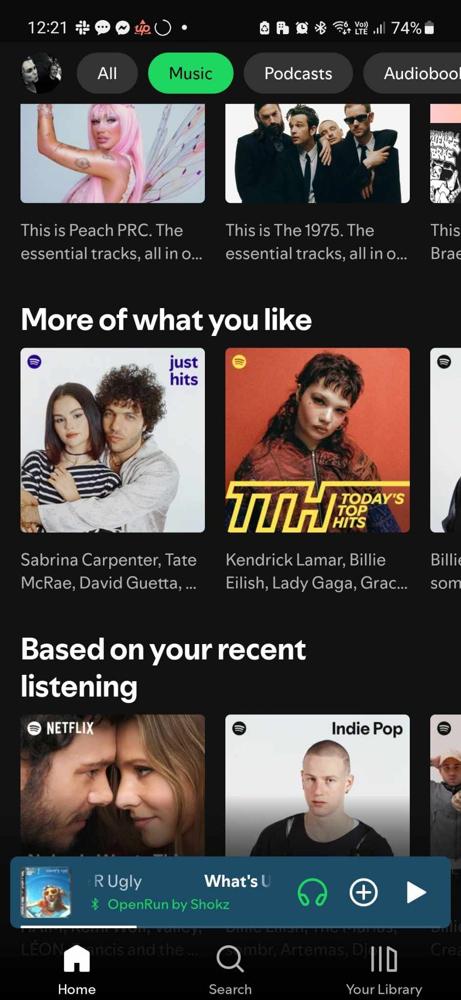
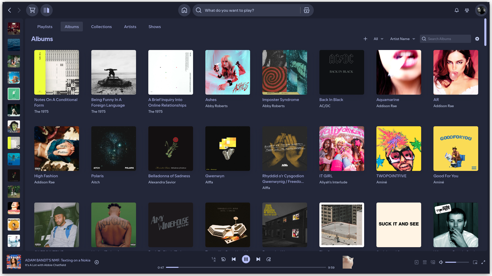

Fixing My Relationship with Spotify
I grew up in a weird time for music and media in general. I am old enough to
remember going to JB Hi-Fi to buy CDs and having piles of DVDs next to the TV,
but I am also young enough to consider myself a part of the streaming-native
generation. I first got Spotify at age 14, and I remember watching YouTube a few
years before that.
Looking back at what my consumption habits were like when I was
younger, I can only think that they have changed for the worse. Instead of
watching movies or listening to albums, I now have playlists and the endless
recommended videos from YouTube to fill my desires for media.
I’m scared that this is only going to get worse in the future. TikTok and the UX
changes made by Spotify to put playlists front and centre in the experience have
turned media into something disposable. The library of things to watch or listen
to is transient, recommended by an algorithm only interested in making you
consume more. In short, the enshitification of media and curation has come and
is here to stay.
And call me a Luddite, but I do have this nostalgic dream of personal curation,
where my library of media is mine to consume as I see fit, rather than curated
by an algorithm. The growth of records and physical media in the last few years
shows that this is not a unique want.
And as much as I would love to be the person who has all their films on DVD and
only listens to records, the cost, both monetarily and time-wise, makes it out
of reach for me right now. So instead, I want to work out how to make these
systems, most importantly Spotify, work for me in my anti-algorithmic curation
mindset.
The Passive vs The Active Consumer
The first step in this process is to work out what I’m not happy with on Spotify. It’s definitely not the ease of access and the value proposition of 15 dollars a month for pretty much all the music I can consume; it’s great. No, instead I think the issue is best exemplified by looking at my Spotify home screen.

On it, we have nothing that I have selected myself. Instead, it is all curated playlists that resemble something that I might want to listen to. And on these playlists, as with most of the curated playlists made on Spotify, it’s a hodgepodge of songs that I definitely like, songs that resemble songs that I like, and then some songs that I don’t care for at all but Spotify thinks that I should like. All of these are present in an order that just doesn’t work.
However, because these are front and centre to my experience in Spotify, these are what I listen to. I do get some joy out of them, but it’s a very passive experience. At no point along the way am I deciding what I should be consuming; instead, I just take in what is given.
This behaviour is almost antithetical to my experience using iTunes and MP3 players. Here, my curation was active, with the closest thing to a recommendation system being my most played albums section. Everything that I heard was something that I chose because I wanted to listen to it.
The divide between active and passive curation is what makes me dislike my
Spotify experience and nostalgise my time with my MP3 players. I think
removing this passive curation process could go a long way to fixing my
relationship with Spotify.
How to Make Spotify More Curatable
Turn of Auto Play
This is a pretty simple one, but it does make a big difference. When I have nothing left in the queue, by default, Spotify will continue playing with recommendations. Turning this off will force me to at least choose what is being listened to.
Get Rid of Liked Songs
I think one of the main culprits of passive curation and consumption is Spotify’s implementation of the liked songs feature. Any time a song is playing, I can click on the + button and it will be added to the ‘liked songs’ playlist. This playlist becomes a dumping ground for all the songs that I like, but if I ever throw it on shuffle, it becomes unlistenable, similar to some of Spotify’s generated playlists.
Instead, there are two things I will do. The first is liking albums instead of songs. Artists put together albums to be a cohesive piece of work. Picking out songs (or playing them on shuffle) is akin to reading a book and skipping half the chapters and reading them out of order.
If I still want playlists, I will make a few instead of dumping songs into liked songs. This makes the act of liking a song more active and will hopefully result in more cohesive playlists.
Get Rid of Recommendations
On my phone, this is almost impossible; however, defaulting to looking at the library tab instead of home should present me with only things I have decided to add to my library.
On the computer, this is best fixed with the help of Spiceify. With it, I can download extensions that will remove recommendations from the client completely.
A couple I like are:

Find New Places for My Recommendations
This is me trying to fix the problem of relying on personalised recommendations, so I think that anything that is personalised or ‘AI’ is out of the question. Instead, I’ve really enjoyed looking at reviews on Pitchfork or Album of the Year. Also, shfl has been good tool for random recommendations. This will find me stuff that other people like, but not necessarily specific to me.
Also, just asking my friends about what they are listening to has been fun, plus Shazam has been really useful in finding the IDs of the tracks that I hear when I am out and about.
I’m going to try implementing these over the next couple of weeks and see how my relationship changes. I’m hoping to see myself build a better relationship with Spotify and a stronger sense of ownership and control over my music library and habits.